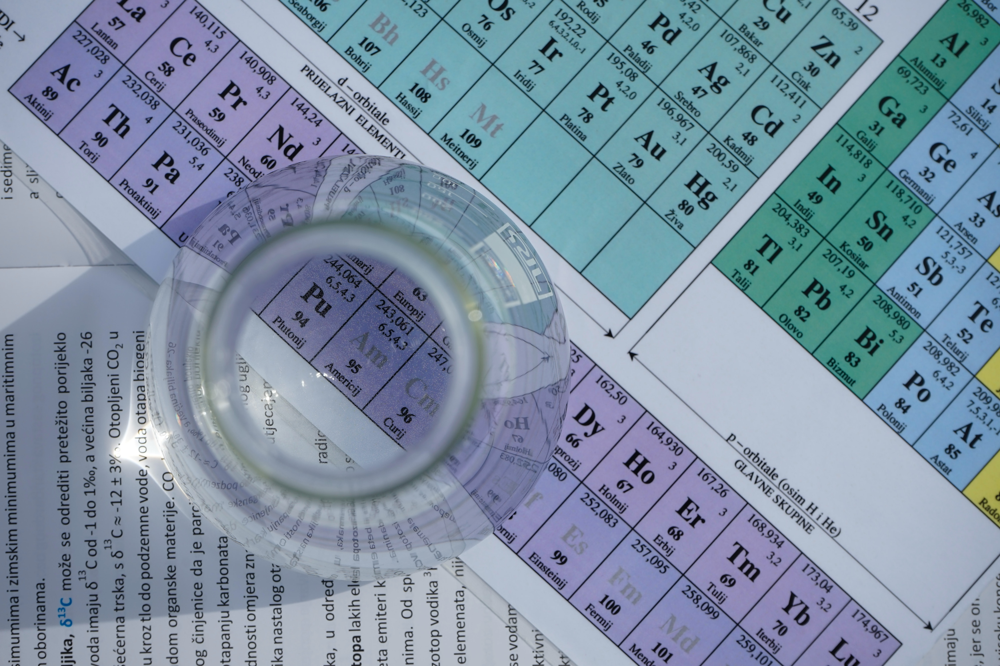

- 화학과에 대한 설명
- 화학과가 있는 대학
- 화학과를 갈때 고등학교에서 선택해야 하는 과목
화학공학과와 화학과의 차이
화학공학과는 화공과라고도 불립니다.
화공과는 공과대학으로 응용 학문입니다.
공학이란 단어가 붙으면 산업화, 공업화하는 성격이라 생각하면 됩니다.
즉 화학과에서 연구하고 개발한 물질을 어떻게 상용화하여 대량생산할 것인지를 공부하는 곳입니다.
화학과란?
화학과에서는 물질을 구성하고 있는 기본 성분과 고유한 성질 및 구조, 그리고 이들의 상호작용으로 어떠한 반응이 일어나서 어떻게 변환되는지 등 화학의 원리를 이해합니다.
동시에 다양한 분야에 직접 응용할 수 있도록 연구능력을 배양합니다.
학과로 개설되어 있거나 물리과, 수학과 등과 함께 학부제로 모집하여 화학을 전공할 수 있습니다.
저학년에는 화학의 기초학문을 공부하고, 고학년이 되면 기초이론을 응용할 수 있도록 다양한 심화이론 뿐 아니라 실험방법과 기기사용법 등을 학습합니다.
기초과목:유기화학, 분석화학, 물리화학, 무기화학, 생화학 등
심화과목:전기화학, 반응속도론, 유기이론, 표면과학, 고분자화학, 공업화학, 의약화학, 환경화학 등
화학과를 가게 된다면, 고무 및 플라스틱화학공학기술자, 과학교사, 도료 및 농약품화학공학기술자, 비누 및 화학품화학공학기술자, 산업안전원, 생명과학시험원, 석유화학공학기술자, 위험관리원, 음식료품화학공학기술자, 의약품화학공학기술자, 자연계열교수, 자연과학시험원, 재료공학기술자, 친환경제품인증심사원, 향기치료사(아로마테라피스트), 화학공학 시험원, 화학연구원 등의 직업을 가질 수 있게 됩니다.
